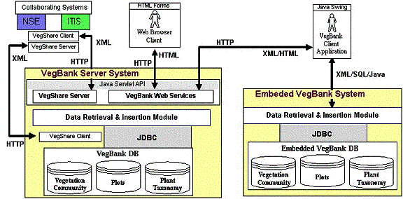

VegBank Server System.
The three component databases (plot, community, and plant taxon entities)
have been designed and implemented on the Oracle 8i, Postgresql 7.1, and HypersonicSQL
RDBMS. In addition to the back-end database implementations, software has
been written to allow web access. This software allows a user to query vegetation
data for multiple attributes stored in the databases. Queries are stored in
the users profile records for future reuse or modification.
Embedded VegBank Client System.
We have developed a Java desktop client tool that has two purposes: (1) to
connect with the application server (using http) in order to perform operations
more extensive than those provided to browser-clients (such as data-validation,
and data transformation); and (2) to manage vegetation data locally, at the
workstation level and in the field. Users of this application client tool
can store personal plot data as well as plot data extracted from VegBank in
an embedded database identical in design to the database resident on the VegBank server. The embedded client solution is
the pure-Java HypersonicSQl RDBMS, which allows it to be run on any operating
system.

System
architecture.
This web-based system is based on a typical three-tiered architecture that
is comprised of a client, application-framework, and a back-end database.
The middle-tier was implemented using Java Servlet technology, XML (eXtensible
Markup Language) for communication, and Java DataBase Connectivity (JDBC).
Due to the open and flexible nature of the implementation tools, we can and
do deploy the VegBank enterprise on a number of platforms and database engines.
The data loader framework currently being used leverages a Java plug-in framework
that allows a flexible interface for legacy data to be inported into the VegBank
database. We have written loader plug-ins for the USGS-NPS Vegetation
Mapping Program Plots Database, the TurboVeg
database system (Hennekens & Schaminee 2001) and the Carolina
Vegetation Survey protocol (Peet et al. 1998). In addition, we are designing
a more flexible class to load data stored in a variety of ASCII formats. Simple
form-driven data entry will also be supported. Data can be extracted from
the VegBank server in XML, and we will soon implement a set of convenient
alternative formats to facilitate use with common analytical tools.